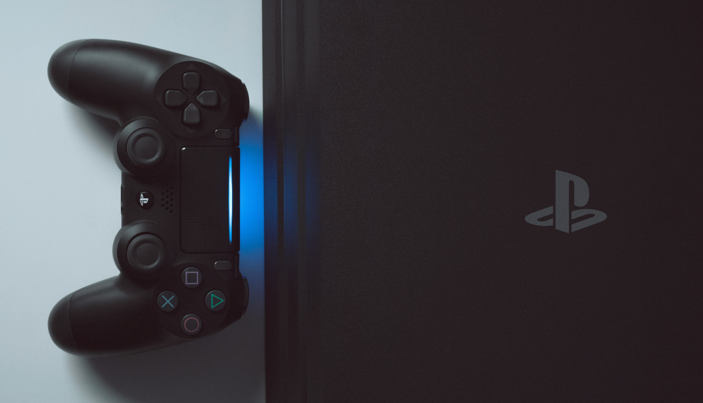
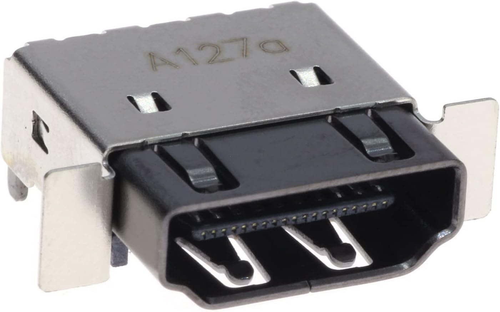

PlayStation 4 (PS4)

Problems with your PlayStation 4? At Console Repair Leeds, our technicians have extensive experience with all PS4 models, including the original, Slim, and Pro. From hardware failures to software issues, we resolve all faults quickly and professionally, with a full guarantee on every repair.
The PlayStation 4 is one of the most popular gaming consoles worldwide, but like any
electronic device, it can develop faults over time. Our Leeds workshop is fully
equipped with **specialist PS4 diagnostic and repair tools**, and we stock genuine
replacement parts for fast turnaround times.
Common PS4 issues include **Blue Light of Death, overheating, disc read failures,
HDMI output faults, controller sync issues, and network connectivity problems**. Our
expert technicians handle every issue at a component level to avoid unnecessary
replacements.
Full Test & Diagnostics – Our workshop uses advanced PS4 diagnostic equipment
to quickly identify the source of any fault.
Expert Team – Our technicians are PS4 specialists with extensive hands-on
repair experience.
Very Competitive Rates – High-quality service at fair and competitive
prices.
**Repair Guarantee** – All repairs and replaced parts are covered by our guarantee.
We use only quality, genuine components to ensure your PS4 runs like new.
Visit our workshop Monday to Saturday, 9:00 AM – 6:00 PM, or call us for a free
quote and advice.

Common Faults

HDMI Port
A damaged HDMI port is one of the most common PS4 faults, causing no display, flickering screens, or signal dropouts. We perform precision HDMI port replacements using quality components to restore crystal-clear video output.
£49.99
Blue Light of Death (BLOD)
The Blue Light of Death occurs when your PS4 pulses blue but fails to output video or boot properly. This is typically caused by faulty APU solder joints, HDMI encoder issues, or power supply problems. We diagnose and repair BLOD at component level.
£89.99
White Light of Death (WLOD)
When your PS4 shows a solid white light but no video output, it usually indicates an HDMI encoder chip failure or damaged HDMI port. Our technicians perform micro-soldering repairs to replace faulty chips and restore video output.
£79.99
Blu-Ray Drive
Disc reading errors, grinding noises, or failure to accept discs are common Blu-ray drive issues. We repair or replace faulty drive mechanisms, lasers, and drive boards to get your PS4 reading discs perfectly again.
£49.99 – £69.99
Overheating
If your PS4 sounds like a jet engine or shuts down during gameplay, it's likely overheating. We perform full thermal maintenance including deep cleaning, thermal paste replacement, and fan servicing to restore quiet, cool operation.
£39.99
Power Issues
PS4 won't turn on, beeps but doesn't start, or randomly shuts off? Power faults can stem from the internal PSU, motherboard components, or power button assembly. We diagnose and repair all power-related issues.
£59.99 – £89.99
Disc Ejecting Problems
Is your PS4 randomly ejecting discs or refusing to eject at all? This common issue is often caused by a faulty eject button sensor or rubber foot. We repair the eject mechanism to stop unwanted disc ejections.
£29.99 – £49.99
Hard Drive Failure
Slow loading times, corrupted data, or error codes like CE-34335-8 often indicate hard drive failure. We can replace your faulty HDD with a new drive or upgrade to an SSD for faster performance.
£49.99 – £89.99
Wi-Fi / Bluetooth Issues
Weak Wi-Fi signal, frequent disconnections, or controllers not pairing are signs of a faulty wireless module. We repair or replace the Wi-Fi/Bluetooth board to restore reliable wireless connectivity.
£69.99
Controller Sync Issues
Controllers failing to connect, randomly disconnecting, or not charging via USB can indicate Bluetooth module or USB port faults. We diagnose and repair both console and controller connectivity issues.
£49.99 – £69.99
USB Port Repair
Damaged USB ports prevent controller charging and data transfer. We replace faulty USB ports with precision soldering to restore full functionality for charging and connecting peripherals.
£39.99 – £59.99
LAN / Ethernet Port
If your PS4 won't connect via Ethernet cable or the connection keeps dropping, the LAN port may be damaged. We repair or replace faulty Ethernet ports for stable, fast wired connections.
£49.99
Error Codes
PS4 error codes like CE-34878-0, SU-30746-0, or NW-31297-2 indicate specific hardware or software faults. Our technicians diagnose the root cause and perform the necessary repairs to eliminate persistent errors.
From £49.99
Liquid Damage
Spilled liquid on your PS4? Quick action is essential. We provide ultrasonic cleaning, corrosion removal, and component-level repairs to maximise the chance of recovery from liquid damage.
From £29.99 (inspection)
Your Fault Not Here?
Experiencing a PS4 problem not listed above? Don't worry – we fix all PlayStation 4 faults. Contact us for a free diagnosis and quote. Our expert technicians will get your console back in action.
Need More Details About Our Services? Give Us a Ring on 01132591500
PS4 Original vs Slim vs Pro
We repair all PlayStation 4 models including the original CUH-1000/1100/1200 series, the PS4 Slim CUH-2000 series, and the PS4 Pro CUH-7000 series. Each model has unique components but our technicians are experienced with all variants. Whether it's the original's touch-sensitive buttons or the Pro's additional cooling requirements, we have you covered.
Same Day Repairs
Many common PS4 repairs can be completed the same day. We stock a wide range of genuine and quality replacement parts including HDMI ports, Blu-ray drives, power supplies, and thermal materials. For more complex board-level repairs, we typically complete work within 2-3 working days. Drop in or book ahead for the fastest service.
Repair Guarantee
Every PS4 repair we perform comes with our comprehensive guarantee. This covers both the work carried out and any replacement parts fitted. If you experience any issues related to our repair within the guarantee period, simply bring your console back and we'll put it right at no extra cost. We stand behind our work 100%.